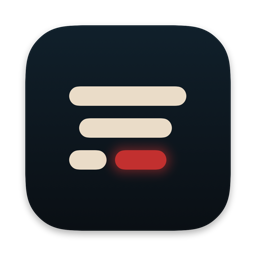
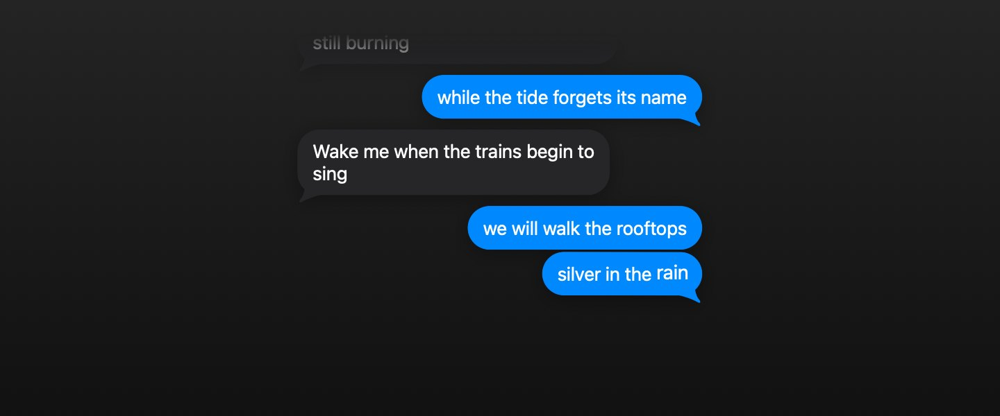
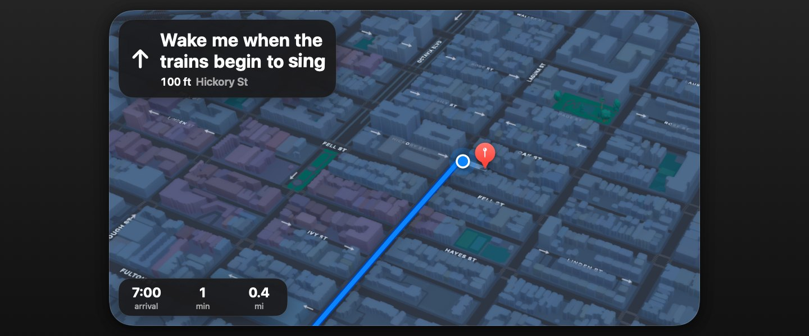
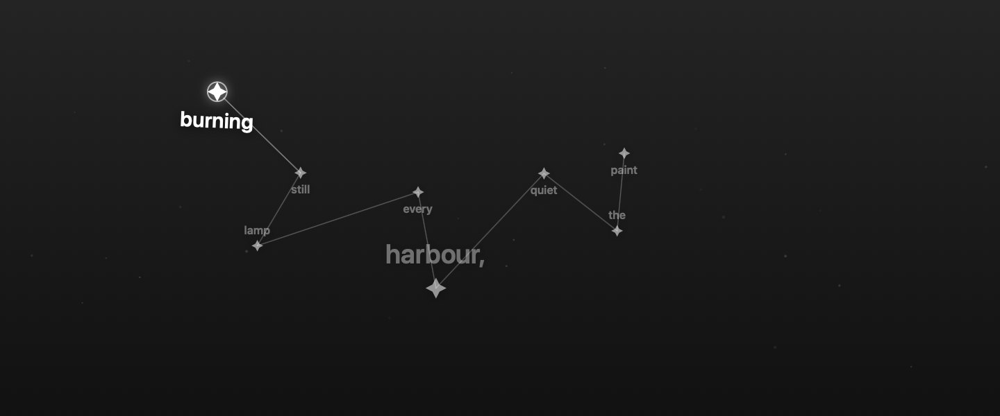
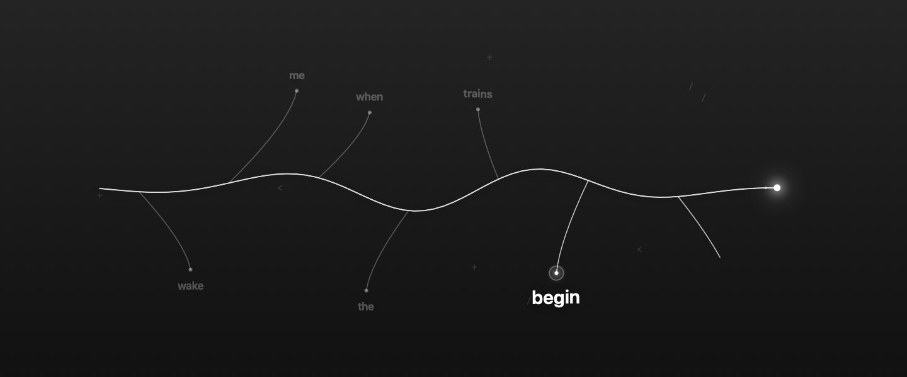
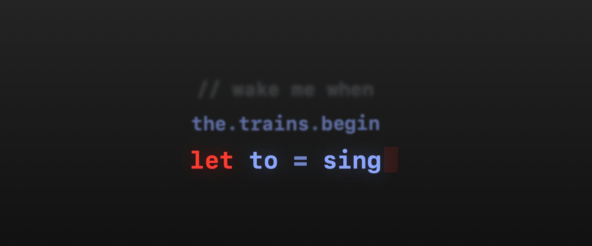
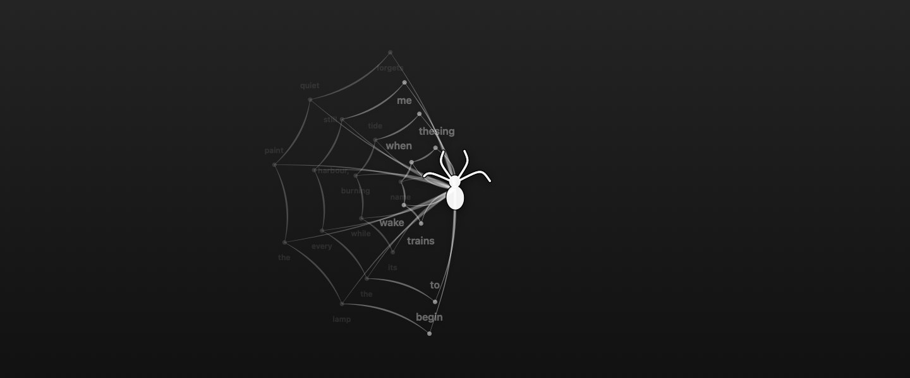
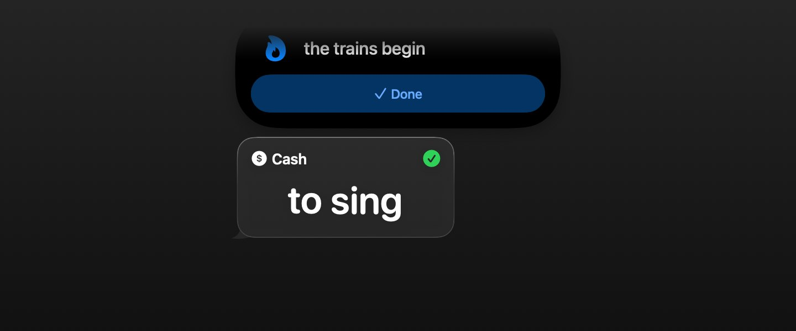
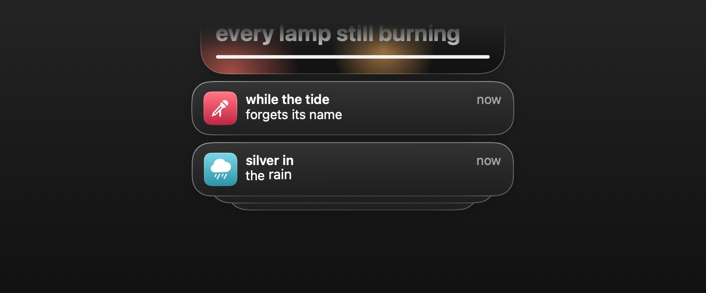

Lock screen
Above the lock screen
The lyrics stay up after you lock the Mac, through an undocumented macOS interface, and over the desktop too if you like, on every display or only the ones you choose.
 Back to work
Back to work
macOS app, 2026
The song you are playing, word by word
On your Mac’s desktop and lock screen

The idea
A small menu-bar app for people who like to see the words of a song while it plays.
Stanza follows the track playing in Spotify or Apple Music, finds lyrics timed to the song, and draws them over the desktop and above the lock screen, one word at a time, as they are sung.
Thirteen styles decide how the words appear. Some are kinetic type that stacks, swells and settles. Some are small motion scenes. Four borrow the look of a phone: a chat thread, a run of payments, a pile of alerts, a walk across a city map.
What it does
Lock screen
The lyrics stay up after you lock the Mac, through an undocumented macOS interface, and over the desktop too if you like, on every display or only the ones you choose.
Timing
Each word appears when it is sung. Songs with only line timing get an estimated time for each word, spread by letter count.
Styles
The window plays every style as a live preview, and all of them are a click away in the menu bar.
Look
Text from 50% to 150%, seven fonts, and three colours of your own or colours taken from the album cover.
Setup
Each player shows what it still needs as numbered steps, with a one-click fix for the step that is still open.
Correction
Move one song earlier or later in one-second steps, up to 20 seconds either way, or set a standing offset of up to a second for every song.
The styles
Kinetic type, motion scenes and phone screens. Eight of the thirteen are below, each frame drawn by the app’s own render command with its invented sample lyrics.








How it works
Privacy
No analytics and no telemetry. Stanza needs one permission per player, to read what is playing, and nothing else.
Install
There is no prebuilt download yet. The build uses Apple’s command-line tools only, so Xcode is not needed.
Read the full quick start (opens in a new tab)On a Mac with Apple silicon
You need macOS 15 or later, Apple’s Command Line Tools, and the Spotify desktop app or Apple Music.
Install the command-line tools, if you don’t have them.
xcode-select --installClone and build. The build ends by running the app’s own self-check.
git clone https://github.com/Rayhanson-Git/stanza.git
cd stanza
./build.shOpen it, and choose Allow when macOS asks to let Stanza read your player.
open build/Stanza.appWhere it stands
About 12,200 lines of Swift across 48 files. Every build runs an assert-based self-check of the parsing, matching, timing and layout logic. There is no CI and there are no automated UI tests yet.
Showing lyrics above the lock screen relies on an undocumented macOS interface. Stanza looks it up at runtime and keeps working without it, showing lyrics only while the Mac is unlocked, but a macOS update could break it.
The app is signed locally, so macOS may ask for permission again after a rebuild. The lyrics services are not under the project’s control, and some songs have no timed lyrics at all.
Read the code
MIT license. macOS 15 or later, on Apple silicon.